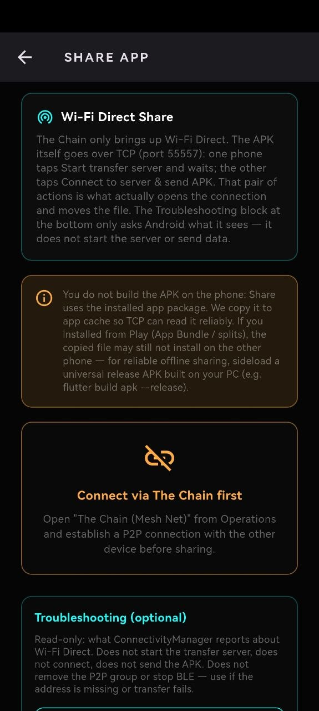
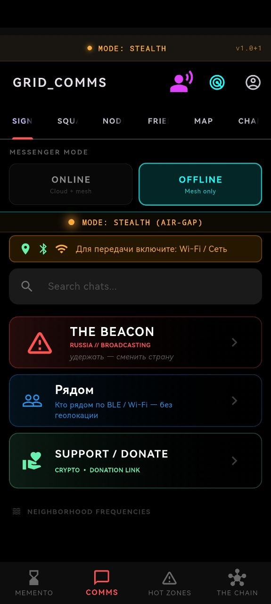
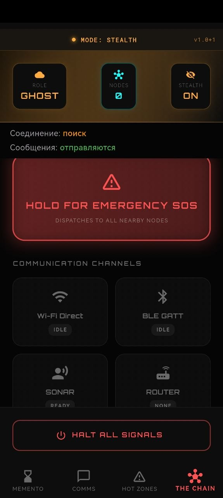
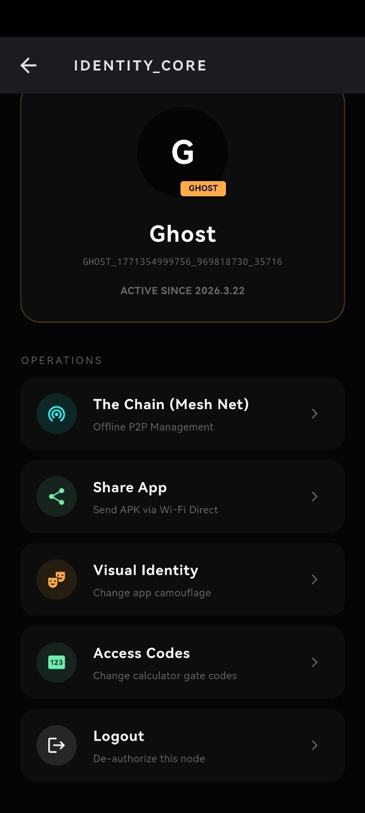
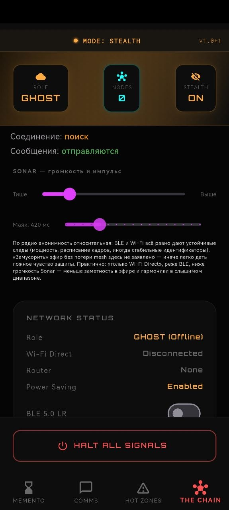

Metro & tunnels
Deep underground, in subways and service tunnels. Messages hop between passengers’ devices — no carrier needed.
Research Alpha · Open Source
When ordinary apps go silent — the mesh still speaks.
We build a messenger for open spaces, emergencies, and places where staying in touch is not a luxury but a lifeline. Underground, in the woods, on a site, in a shelter — where towers fail, devices can still find each other. Memento Mori is a shadow mesh: delay‑tolerant, offline‑first messaging over sound, Bluetooth, and Wi‑Fi Direct. No single center. No base station you can unplug. It works even when there is no internet — because your phones are the network.
Our priority is simple: people should stay connected even when circumstances turn against them. Often, communication is the last thing that can stand between someone and harm — or bring help when it matters most.
We reject the idea that people should be stripped of confidential, anonymous communication. Anonymity is not about hiding from accountability — it is about remaining yourself when speaking freely is risky. To erase anonymity is to erase room for an honest inner life.
There is no single choke point. The stack is built for direct links between devices — Bluetooth, Wi‑Fi, whatever channel is available. You cannot “turn off” the whole thing from one datacenter, because there isn’t one. The mesh persists where people are willing to relay for each other.
Human beings remain human only as long as they are free to speak and to think freely.
Memento Mori is a fault-tolerant, autonomous mesh designed to operate under total network degradation. It implements a shadow communication layer beneath the traditional Internet — for when the grid goes dark, the net is monitored, or you simply need to stay off the radar.
We are currently in alpha. The app is under active development and testing.
Feedback and device reports from the community are very welcome — open an issue or discussion on GitHub.
No cell coverage doesn’t mean no communication. These are the kinds of places Memento Mori is built for — where conventional networks fail and a phone-to-phone mesh can keep people connected.
Deep underground, in subways and service tunnels. Messages hop between passengers’ devices — no carrier needed.
Heavy machinery, rock, and depth block normal signal. Mesh keeps crews in touch for safety and coordination.
Scaffolding, basements, remote lots. Teams stay linked without relying on spotty or absent infrastructure.
Hiking, camping, search and rescue. Devices relay through the group; no towers in the middle of nowhere.
When the grid is down or you’re off the map. Local mesh keeps communication alive when the rest of the net is not.
Festivals, disasters, or simply places carriers never bothered to cover. If phones are nearby, the mesh can form.
Air-gapped discovery using ultrasonic BFSK (18–20 kHz). Works in radio silence or RF-monitored zones. No pairing required — devices find each other by sound.
Zero-connect topology: nodes broadcast gradient state in advertising packets. No heavy connections — just lightweight discovery and hop-count inference.
When a BLE link is verified, a high-bandwidth Wi-Fi group forms to flush the message queue. Biological burst-mode saves up to 90% battery.
Fully functional offline identity (Ed25519) in SQLite. When the internet returns, your ghost merges atomically with a persistent ID — no history loss.





Android API 26+ recommended. Emulators are limited due to Bluetooth and Wi-Fi Direct.
We are grateful to organizations that help us ship resilient, people‑first communication. This space is reserved for their logos and links.
No partners listed yet
If your company shares our mission — the right to connect and to speak freely — we’d welcome your support. Reach us at pslergy@gmail.com.
Projects that defend anonymity and freedom of expression need backing today more than ever. If you believe that the right to speak confidentially is part of the right to remain yourself, you can help this work move forward.
Your support is a contribution to a world where connection stays within reach for everyone — whatever the circumstances — and where technology serves people instead of controlling them.
Human beings remain human only as long as they are free to speak and to think freely.
Contact: pslergy@gmail.com
Memento Mori is an independent open-source research effort. Donations and sponsorship help us ship faster and keep resilient, censorship-resistant communication on real devices.
Donate (crypto — no middleman):
bc1q7308mnt0yarq5s9ngvjvurp3juggn9jy9yh53p
0xd642d38532FE3c2B5Fa0547556fff2d9388621E6
0xd642d38532FE3c2B5Fa0547556fff2d9388621E6
Click an address to copy. Also available in the app under Support / Donate.
GitHub Sponsors — application submitted; link will be active once approved. github.com/sponsors/pslergy